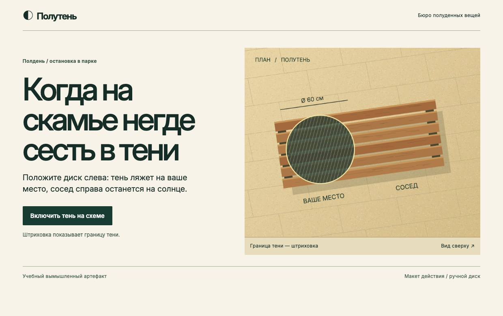

Открываем практикум…
Открываем практикум…
Практикум
Вы проведёте один экран через 12 испытаний. Одногруппники расскажут, что увидели, а вы решите, что изменить. Посмотрите, как менялась «Полутень», или войдите в практикум.

Посмотрите, как менялась «Полутень» за 12 испытаний. На каждом этапе можно сравнить эскизы до и после правки и прочитать ответ, который повлиял на решение автора.
Выберите группу и своё имя. После входа нажмите «Скопировать личную ссылку» вверху страницы и сохраните адрес, чтобы вернуться к своему экрану с другого устройства.
Во вкладке «Мой экран» загрузите JPG или PNG до 5 МБ. Оставьте в кадре только ту часть лендинга, которую посетитель увидит до прокрутки.
Откройте «Маршрут · 12 этапов». Запишите, что хотите выяснить о своём экране, и нажмите «Открыть этап для групп».
Во вкладке «Экраны групп» нажмите «Пройти этап» рядом с заданием, которое открыл автор. Для отдельной пятисекундной проверки нажмите на плитку эскиза в галерее. Начать можно ещё до загрузки своего экрана. Ответьте на готовые вопросы своими словами и сохраните ответы. Автор увидит их вместе с вашим именем.
На этапах с таймером нажмите «Начать показ» и оставайтесь во вкладке. Через пять секунд эскиз исчезнет. Напишите, что запомнили. В свободной проверке вы проходите версии каждого автора по порядку. После сохранения ответов откроется следующая доступная версия. В каждой проверке три вопроса — о предложении, его адресате и том, чего вы ждёте от кнопки.
Вернитесь к своему этапу и нажмите «Обновить ответы». Что человек понял иначе, чем вы ожидали? Выберите кадр для следующего испытания и запишите решение. В обосновании укажите деталь эскиза или реплику, которая повлияла на ваш выбор.
Исходные кадры, ответы одногруппников и все ваши решения собраны во вкладке «Мой экран» → «Вся история по этапам».
Каждый сохранённый ответ на вопрос о чужом эскизе — 1 балл. Новая версия своего экрана — 2 балла, с обоснованием — 3 балла за всю правку. Если решите оставить прежний кадр, объясните почему — за это тоже 3 балла. Исходный экран и преподавательская самопроверка дают 0 баллов. При перезапуске маршрута баллы за свой экран в прежней попытке снимаются, а баллы за ответы по чужим эскизам сохраняются.
Во вкладке «Рейтинг» видно, сколько баллов вы получили за свои правки и сколько — за ответы одногруппникам.